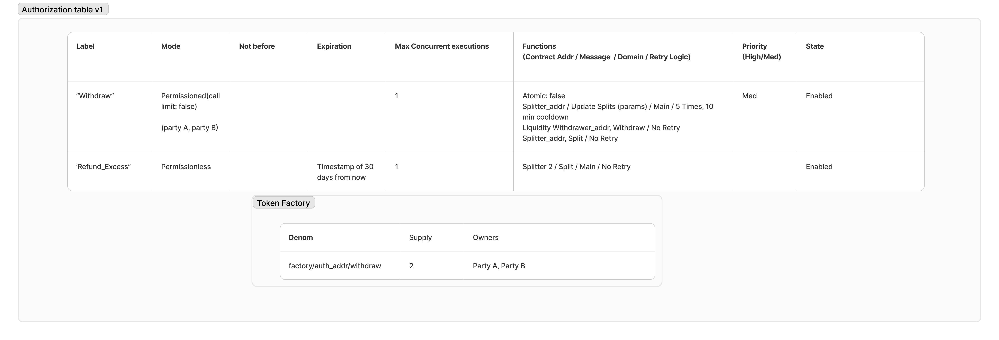

Owner Functions
-
create_authorizations(vec[Authorization]): provides an authorization list which is the core information of the Authorization contract, it will include all the possible set of functions that can be executed. It will contain the following information:-
Label: unique name of the authorization. This label will be used to identify the authorization and will be used as subdenom of the tokenfactory token in case it is permissioned. Due to tokenfactory module restrictions, the max length of this field is 44 characters. Example: If the label is
withdrawand only addressneutron123is allowed to execute this authorization, we will create the tokenfactory/<contract_addr>/withdrawand mint one to that address. Ifwithdrawwas permissionless, there is no need for any token, so it's not created. -
Mode: can either be
PermissionedorPermissionless. IfPermissionlessis chosen, any address can execute this function list. In case ofPermissioned, we will also say what type of permissioned type we want (withCallLimitor without), a list of addresses will be provided for both cases. In case there is aCallLimitwe will mint a certain amount of tokens for each address that is passed, in case there isn’t we will only mint one token and that token will be used all the time. -
NotBefore: from what time the authorization can be executed. We can specify a block height or a timestamp.
-
Expiration: until when (what block or timestamp) this authorization is valid.
-
MaxConcurrentExecutions (default 1): to avoid DDoS attacks and to clog the execution queues, we will allow certain authorizations subroutines to be present a maximum amount of times (default 1 unless overwritten) in the execution queue.
-
Subroutine: set of functions in a specific order to be executed. Subroutines can be of two types:
AtomicorNonAtomic. For theAtomicsubroutines, we will provide an array ofAtomicfunctions, an optionalexpiration_timeand an optionalRetryLogicfor the entire subroutine. For theNonAtomicsubroutines we will just provide an array ofNonAtomicfunctions and an optionalexpiration_time. Theexpiration_timedefines how long messages that are executing a subroutine will be valid for once they are sent from the authorization contract. This is particularly useful for domains that use relayers without timeouts (e.g. Hyperlane). If theexpiration_timeis not provided, the relayer can go down for an indefinite amount of time and the messages will still be valid and execute when it's back up. If theexpiration_timeis provided, the messages will be valid for that amount of time, by adding the current block timestamp to theexpiration_time, and if the relayer is down for longer than that, the messages will be considered expired once the execution is attempted in the Processor contract, returning anExpiredresult.-
AtomicFunction: each Atomic function has the following parameters:-
Domain of execution (must be the same for all functions in v1).
-
MessageDetails: type (e.g. CosmwasmExecuteMsg, EvmCall ...) and message information. Depending on the type of the message that is being sent, we might need to provide additional values and/or only some specific
ParamRestrictionscan be applied:- If we are sending messages that are not for a
CosmWasm ExecutionEnvironmentand the message passed doesn't contain Raw bytes for that particular VM (e.g.EvmRawCall), we need to provide theEncoderinformation for that message along with the name of the library that theEncoderwill use to encode that message. For example, if we are sending a message for anEvmCallon an EVM domain, we need to provide the address of theEncoder Brokerand theversionof theEncoderthat the broker needs to route the message to along with the name of the library that theEncoderwill use to encode that message (e.g.forwarder). - For all messages that are not raw bytes (
jsonformatted), we can apply any of the followingParamRestrictions:MustBeIncluded: the parameter must be included in the message.CannotBeIncluded: the parameter cannot be included in the message.MustBeValue: the parameter must have a specific value.
- For all messages that are raw bytes, we can only apply the
MustBeBytesrestriction, which matches that the bytes sent are the same as the ones provided in restriction, limiting the authorization execution to only one specific message.
- If we are sending messages that are not for a
-
Contract address that will execute it.
-
-
NonAtomicFunction: each NonAtomic function has the following parameters:-
Domain of execution
-
MessageDetails (same as above).
-
Contract address that will execute it.
-
RetryLogic (optional, self-explanatory).
-
CallbackConfirmation (optional): This defines if a
NonAtomicFunctionis completed after receiving a callback (Binary) from a specific address instead of after a correct execution. This is used in case of the correct message execution not being enough to consider the message completed, so it will define what callback we should receive from a specific address to flag that message as completed. For this, the processor will append anexecution_idto the message which will be also passed in the callback by the service to identify what function this callback is for.
-
-
-
Priority (default Med): priority of a set of functions can be set to High. If this is the case, they will go into a preferential execution queue. Messages in the
Highpriority queue will be taken over messages in theMedpriority queue. All authorizations will have an initial state ofEnabled.
Here is an example of an Authorization table after its creation:

-
-
add_external_domains([external_domains]): to add anExternalDomainto the Authorization contract, the owner will specify what type ofExecutionEnvironmentit has (e.g.CosmWasm,Evm...) and all the information required for each type ofExecutionEnvironment. For example, if the owner is adding a domain that usesCosmWasmas ExecutionEnvironment, they need to provide all the Polytone information; if they are adding a domain that usesEVMas ExecutionEnvironment, they need to provide all the Hyperlane information and theEncoderto be used for correctly encoding messages in the corresponding format. -
modify_authorization(label, updated_values): can modify certain updatable fields of the authorization: start_time, expiration, max_concurrent_executions and priority. -
disable_authorization(label): puts an Authorization to stateDisabled. These authorizations can not be run anymore. -
enable_authorization(label): puts an Authorization to stateEnabledso that they can be run again. -
mint_authorization(label, vec[(addresses, Optional: amounts)]): if the authorization isPermissionedwithCallLimit: true, this function will mint the corresponding token amounts of that authorization to the addresses provided. IfCallLimit: falseit will mint 1 token to the new addresses provided. -
pause_processor(domain): pause the processor of the domain. -
resume_processor(domain): resume the processor of the domain. -
insert_messages(label, queue_position, queue_type, vec[ProcessorMessage]): adds these set of messages to the queue at a specific position in the queue. -
evict_messages(label, queue_position, queue_type): remove the set of messages from the specific position in a queue. -
add_sub_owners(vec[addresses]): add the current addresses as 2nd tier owners. These sub_owners can do everything except adding/removing admins. -
remove_sub_owners(vec[addresses]): remove these addresses from the sub_owner list.